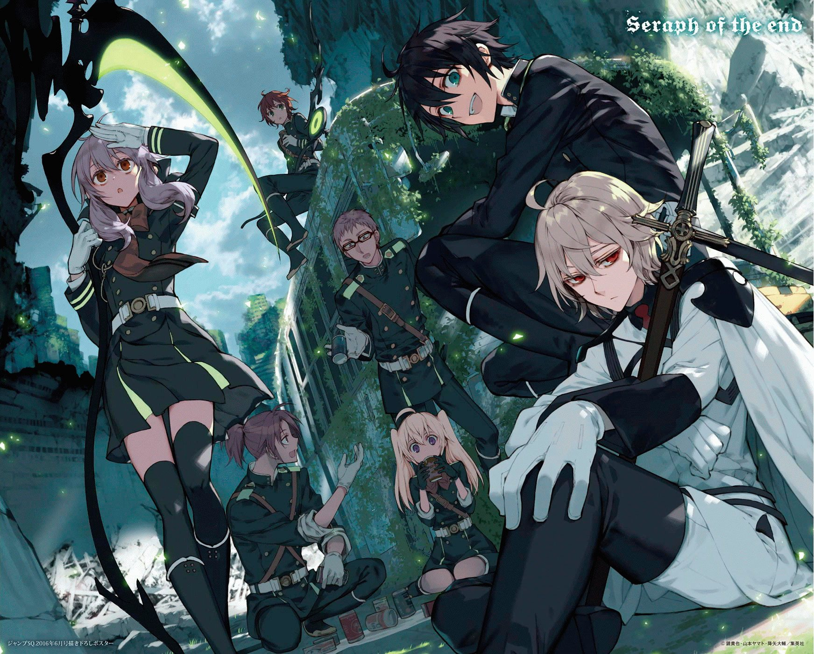

Описание
В стремлении к запретным знаниям «человек разумный» опять напортачил – в 2012 году на волю вырвался смертельный вирус, начавший косить человечество. Умирали почему-то взрослые, и тут, откуда ни возьмись, явились вампиры и согнали оставшихся детей в свой подземный город, объявив, что отныне «людишки» будут жить под защитой клыкастых хозяев, расплачиваясь кровью. Юичиро пожил так 4 года и решил бежать – вместе с названным братом Микой и всей «семьей Хьякуя», группой детей, выросшей в одном приюте. Конечно, вампиры легко догнали и перебили беглецов, ушел лишь один.
- 

Выйдя на поверхность, юный Хьякуя понял, что эпидемия кончилась, но мир изменился – кругом разруха, бродят демоны, а кровососы потихоньку расширяют территорию, предлагая жителям «защиту». Власть в Японии захватила семья Хиираги, сформировавшая Имперскую Демоническую армию, которая защищает людей и бьет вампиров зачарованным оружием. Свой путь Юичиро ясен – готовиться к службе, мстить за погибшую семью. Прямого и порывистого парня ждет немало сюрпризов и неожиданностей, но в таком поганом мире лучше надеяться на свой дар и свой меч, чем на волю судьбы и благосклонность правителей!

Особое подразделение войск Императорской Демонической Армии, отряд «Демоническая луна», специализируется исключительно на уничтожении вампиров. Туда-то и вступает Юитиро, полный решимости отомстить вампирам за то, что те сделали с его семьей. Но постепенно он учится работать в команде, находит новых друзей, и стремление их защитить становится его новой мотивацией. Между тем его друг Микаэла, которого спасла вампирша Крул, сделав таким же вампиром, уверен, что армия использует Юичиро, и пытается его оттуда вытащить.